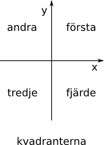
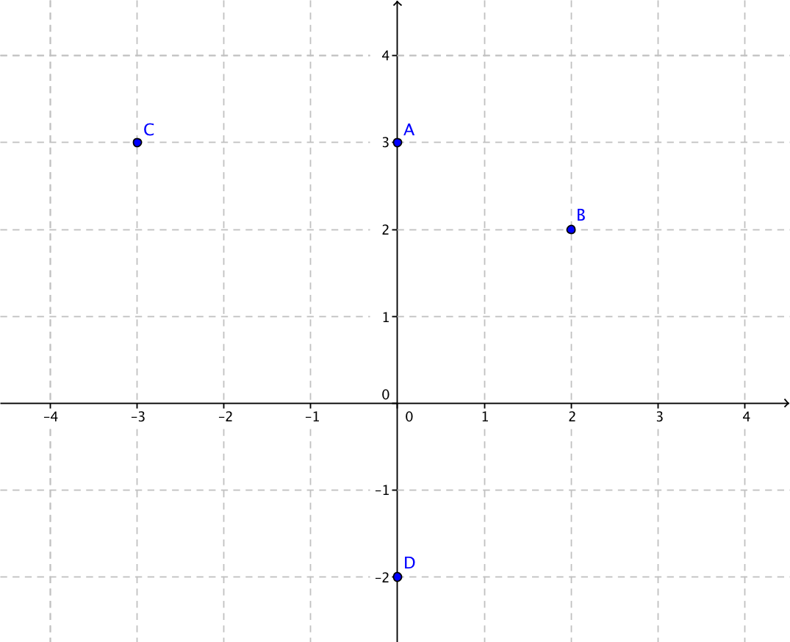
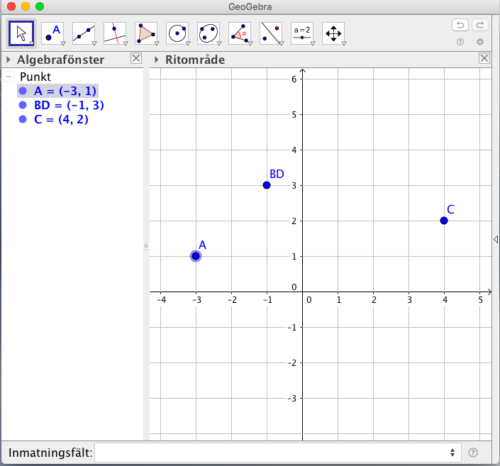

1. Koordinatsystem
Koordinatsystem delas in i två olika typer, kartesiska- och polära- koordinatsystem.
Kartesiska koordinatsystem består av två eller tre talaxlar som är räta mot varandra. Det "normala" koordinatsystem som du är van med från grundskolan är ett kartesisk koordinatsystem i två dimensioner. Axlarna kallar vi för x och y. Har vi tre dimensioner har vi x,y och z.
Det kartesiska koordinatsystemet är en uppfinning av René Descartes.

De fyra områdena som bildas i ett kartesiskt koordinatsytem i två dimensioner kallas för första, andra, tredje och fjärde kvadranten.

Det polära koordinatsstemet består av ett avstånd från origo och en vinkel från x-axeln.
Mera om polära koodinatsystem och tillämpning kan du läsa från engelskspråkiga Wikipedia.


Lösning
| Kartesisk koordinat | Polär koordinat |
|---|---|
| A) (0, 3) | \( (3, 90^{\circ})\) |
| B) (2, 2) | \( (\sqrt{8}, 45^{\circ})\) |
| C) (-3, 3) | \( (\sqrt{18}, 135^{\circ})\) |
| D) (0, -2) | \( (2, 270^{\circ})\) |
Uppgifter
- Träna användingen av GeoGebra genom att rita ut följande punkter genom att använda dig av Inmatningfältet.
Punkt Koordinater A (-3,1) C (4,2) BD (-1,3) Någonting i stil med

- Bestäm koordinaterna för följande punkter i det kartesiska- och polära- koordinatsystemen. Kartesiska koordinaterna ser ut som (1,-2) och de polära koordinaterna som (4,64o).
Välj av följande karteiska koordinater: (-3, 0), (-1, -1), (0, 2), (0, 1), (3, -3) och (\( -\sqrt{8}, \sqrt{8}\) ).
Tips: Skissa upp ett koordinatsystem och tänk efter.
Karteisk koordinat Polär koordinat (2, 90o) (3, 180o) (\( \sqrt{2}\) , 225o) (4, 135o) (\( \sqrt{18}\) , 315o) (1, 450o) Karteisk koordinat Polär koordinat (0, 2) (2, 90o) (-3, 0) (3, 180o) (-1, -1) (\( \sqrt{2}\) , 225o) (\( -\sqrt{8}, \sqrt{8}\) ) (4, 135o) (3, -3) (\( \sqrt{18}\) , 315o) (0, 1) (1, 450o)